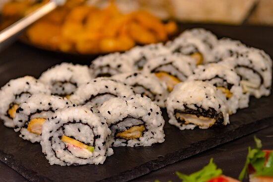

SUSHI
Sushi (すし, 寿司, 鮨, 鮓, pronounced [sɯɕiꜜ] or [sɯꜜɕi]) is a Japanese
dish of prepared vinegared rice (鮨飯, sushi-meshi), usually with some
sugar and salt, accompanied by a variety of ingredients (ねた, neta), such
as seafood, often raw, and vegetables.
The combination of fresh fish, rice, and vegetables makes for a truly
unique and amazing culinary experience. Whether you are eating nigiri or
maki rolls, there is no doubt that sushi is one of the best culinary
experiences out there.
INGRIDIENTS
- Rice
- Nori(Sea weed)
- Fish
- vegetables
STEPS
- Cook rice in water until it boils. ...
- Meanwhile, chop filling into strips or sticks.
- Mix sugar and vinegar. ..
- On your sushi bamboo mat, spread out 1 sheet of nori.
- Cover it as thinly as you can with the rice mixture. .
-
In the centre of the nori, lay out horizontal lines of your filling (eg.
a line of salmon and a line of cucumber). Don’t overload your sushi with
filling.
-
Now for the tricky part. Grip the mat firmly in both hands and roll up
sushi as tight as you can. The mat will help you apply even pressure
along the roll. Note: don’t roll up the mat into the sushi!
- Wet the rice-free strip of nori and ‘glue’ it to the sushi roll.
-
Chop the roll into 1¼" slices – you’re done! Repeat steps 4-9 with
different fillings for the remaining 3 sheets of nori. You will get
better with every roll!